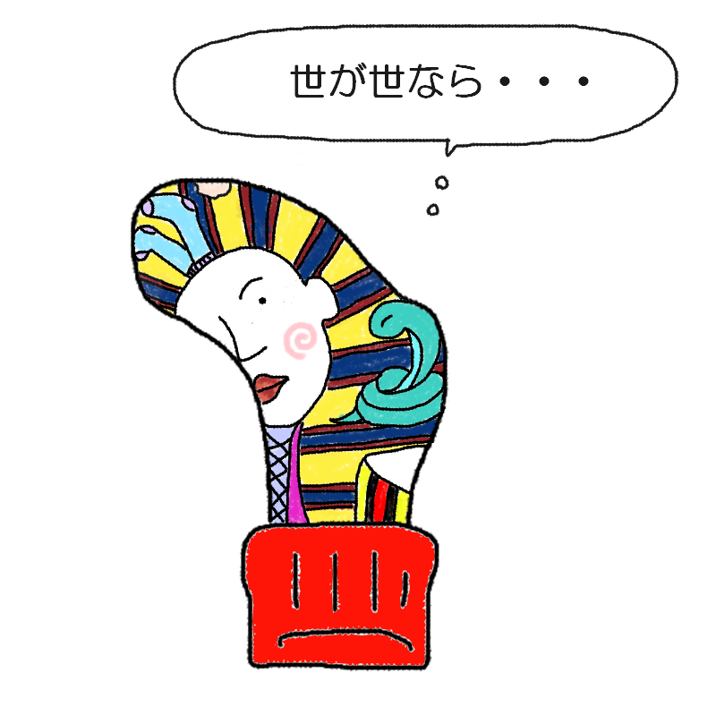

あなたの診断結果
？ ？ ？ （キャラクター名前募集中）親指の先端にあく人
【高貴なる不遇のファラオ！
自らピラミッドの石を積む労働型】

「神よ…ナイル川のほとりと言ったはずだ！
なぜ我が足元は、湿度100%の革靴の中なのだ！」
転生ガチャの大失敗により過酷な最前線へ配属され、日夜爪という名の反乱分子と戦いながらピラミッド（大穴）を築く不遇の王！
あなたは、「圧倒的な王家の血筋と誇りを持っているにもかかわらず、人生のあらゆる運がことごとく斜め上にねじ曲がっている、最高にドラマチックな苦労人タイプ」です。
生前の遺言を神様に盛大に聞き間違えられ、よりによって『湿気と摩擦が支配する人間のスニーカー内』という人類史上最も治安の悪いデスゾーンに転生。
黄金のマスクの代わりに、毎日親指の爪という名の『血を分けた反乱分子』から上方向へ容赦なく突き刺される下克上を味わっています。
爪が伸びるたびに国家予算（布地の残量）が容赦なく削られていく恐怖に震えつつも、「これは神への大いなる生贄の儀式である！」と強引に自分を洗脳。
今日も今日とて自らの摩擦力で布地を削り取り、勝手に自前のピラミッド（大穴）を拡張し続ける完全なるブラック労働に身を投じています。
不遇なファラオの生態
- 転生先ガチャに大失敗し、足の臭いと摩擦に耐えながら生きる完全なブラック環境
- 王としてのプライドがあるため、破れた穴を「自ら石を積んで築き上げたピラミッド」と言い張る
- 上から容赦なく襲いかかる「爪」という名の反乱分子に日々怯えている
- 外の世界（フローリング）の眩しさに感動しつつも、結局靴下に閉じ込められているシュールな現実
最後にひとつ。
過酷なスニーカー王国で孤独にピラミッドを積み続けるファラオよ。
その理不尽な労働環境と壮大な歴史の軌跡を、今すぐすべての臣下（SNS）に向けて布告せよ！
このキャラクターに名前をつける
思いついた名前を教えてね！
※このスタンプには日陰に消えたボツキャラが混ざっています
※この診断はただのお遊びです。
※靴下の穴が開く場所には個人差があります。